Mitverfolgen unter ai.reneborner.de
die größte und letzte Innovation der Menschheit?
Definition
Unterscheidung zwischen starker und schwacher AI
Schwache | narrow AI
Starke | general AI
Geschichte
Machine Learning

Anwendungen
Ausblick
 
